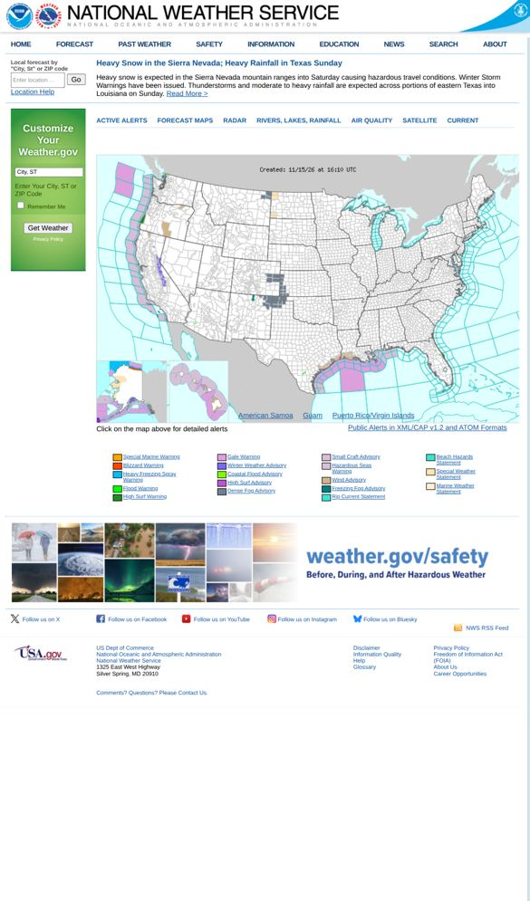
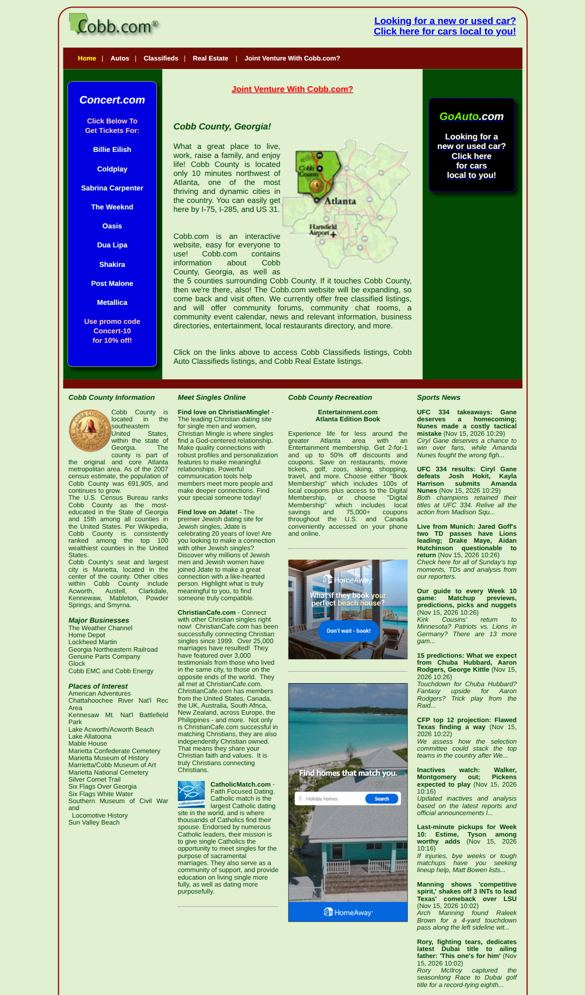

How I tested
I opened both sites on a phone-sized screen (iPhone 13: 390 × 844 CSS pixels) on November 15, 2026, and looked at layout, navigation and readability. I also checked the page code for a viewport tag, measured how wide each page is laid out, and recorded the text and link sizes.
The main finding: neither home page has a <meta name="viewport"> tag. Without it, the phone pretends to be a desktop about 980px wide, lays out the full desktop page, and shrinks it to about 39–40% to fit the screen. Every other problem below follows from that.
weather.gov (National Weather Service)

Layout issues
- It's a fixed desktop layout: a left column (the location search and the green "Customize Your Weather.gov" box) next to the main column. It doesn't stack into one column on a phone.
- The page is laid out about 990px wide, with one part (the state listings) 780px wide. You have to pinch to zoom and then scroll sideways.
- The alerts map, the page's main content, is only about the width of the phone screen once shrunk. You have to zoom in to tell the warning colors apart.
Navigation problems
- Two rows of horizontal menus (HOME, FORECAST, PAST WEATHER… and ACTIVE ALERTS, FORECAST MAPS, RADAR…) with no mobile "hamburger" menu.
- The top menu opens drop-down lists (Local, Graphical, Aviation, Marine…). Those are built for a mouse hovering, so they're awkward with a finger.
- The menu links are about 15px tall in the layout, so on screen they're only about 6px tall. That's far below the 24px minimum target size in the accessibility guidelines (WCAG 2.2), and the 44px that Apple recommends. 60 of the 64 visible links and buttons are smaller than 24px in at least one direction, even before shrinking.
Readability concerns
- Most text is 10–13px, and shrinking it to 39% makes it about 4–5px on screen. The headline story and the map legend can't be read without zooming.
- The legend uses small, underlined, colored links next to small color squares. These are hard to read and hard to tap.
- Good: the design is clean, with high-contrast dark text on white. The location search ("City, St" or ZIP) is at the top, which is what most visitors want.
cobb.com (Cobb County information portal)

Layout issues
- It's an older fixed-width design built with tables (9 tables on the home page). It has 3 columns at the top (Concert.com promo, welcome text, GoAuto ad) and 4 narrow columns below (County Information, Meet Singles Online, Recreation, Sports News).
- On a phone, the columns stay side by side, so each one is only a sliver of the screen.
- Ads and promos take up a large share of the space, and the main county information is pushed into a narrow column.
Navigation problems
- The main menu (Home | Autos | Classifieds | Real Estate | Joint Venture) is 11px text in a 12px-tall bar. On screen that's about 4–5px, and the links sit close together, separated only by "|" characters. It's very easy to tap the wrong one.
- There's no mobile menu, so the same small desktop bar is the only way to move around the site.
- Large ad blocks such as "Looking for a new or used car?" look like navigation, which makes it hard to tell where the real site links are.
Readability concerns
- Most of the text is 11–12px, with some at 9px, so it's about 4–5px on screen. It's unreadable without zooming, and once you zoom, you have to scroll sideways on every line.
- Six long text blocks are fully justified, which creates uneven gaps between words in the narrow columns.
- Many colors and fonts compete for attention: white and yellow on bright blue, red links on light green, and italic news summaries. The page is busy and hard to scan.
How the Lab 10 techniques would fix these sites
| Problem | Responsive fix (from this lab) |
|---|---|
| Page shrunk to about 40% on phones | Add <meta name="viewport" content="width=device-width, initial-scale=1"> |
| Fixed 980–990px layout, sideways scrolling | A fluid grid: convert px widths to % (Task 2), and use max-width: 100% on images and the map |
| Side-by-side columns on a small screen | Media queries that stack the columns at about 640px (Task 3), with the main content first and ads below |
| Tiny horizontal menus and hover drop-downs | A menu that collapses behind a button below a breakpoint, with tap targets at least 44px tall |
| Text about 4–5px on screen | A 16px base font, line-height around 1.5, left-aligned instead of justified text in narrow columns |